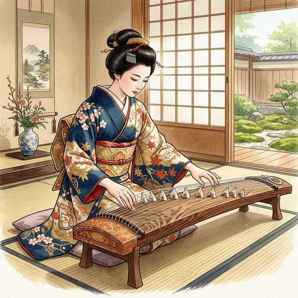
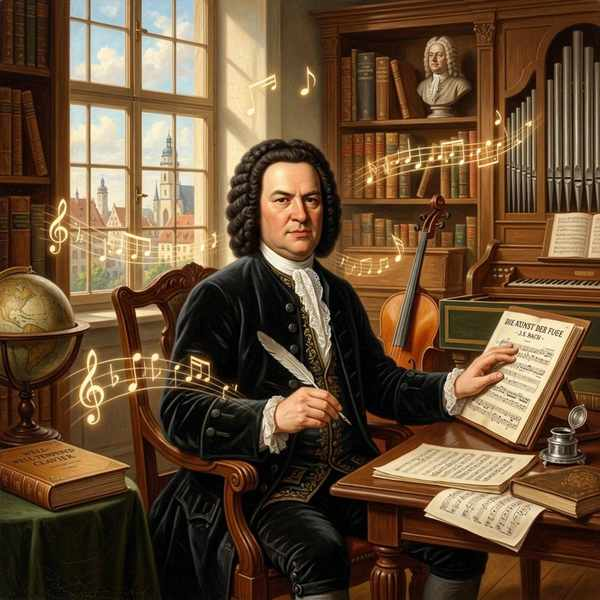
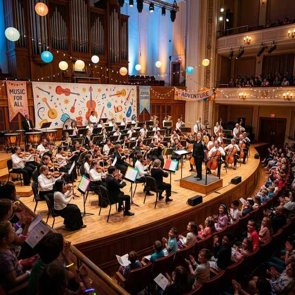

中学音楽（鑑賞曲）
鑑賞曲② (箏曲「六段の調」・小フーガ・交響曲第5番)
日本の伝統的な弦楽器・箏で奏でられる「六段の調」、パイプオルガンの王道でありバッハの名曲「小フーガ」、そしてクラシック史上最も有名なベートーヴェンの「交響曲第5番（運命）」の3曲を解説します。それぞれの構造形式や、楽器の構造に関する重要語句をマスターしましょう！
1. 八橋検校「六段の調（ろくだんのしらべ）」

日本の代表的な和楽器である箏（そう）の独奏曲の最高峰。
① 基本データ
- 使う楽器：箏（こと／そう）（奈良時代に中国から日本へ伝来しました）
- 弦の数：ふつうは13本の弦が張られています。
- 作曲者：八橋検校（やつはしけんぎょう）（江戸時代前期に活躍した「近世箏曲の祖」）
- 成立した時代：江戸時代
- 曲の分類形式：段物（だんもの）（歌の入らない器楽曲で、曲全体が数段［この曲は6つの段］に分かれている形式）
- 調弦法（チューニング）：平調子（ひらぢょうし）（八橋検校が創始した、最も基本的な調弦法）
② 定期テストに出る特徴と楽器の各部名称
- 序破急（じょはきゅう） ➔ 日本の伝統芸能における速度変化の概念。「ゆっくり始まり（序）、徐々に展開してテンポアップし（破）、最後は急いで結ぶ（急）」という構成をとります。「六段の調」は序破急の典型例です。
- 箏の流派と爪の形：
- 生田流（いくたりゅう）：角ばった四角い爪を使い、楽器に対して斜めに構えます。
- 山田流（やまだりゅう）：丸みを帯びた爪を使い、楽器に対して正面に構えます。
- 箏の部品：
- 柱（じ） ➔ 箏の弦を支え、動かすことで音の高さを調節する駒。
- 竜尾（りゅうび） ➔ 箏の端にある装飾部分（竜の尾に見立てた部分。反対の頭側は「竜頭」と呼びます）。
2. J.S. バッハ「小フーガ ト短調」

左：J.S. バッハの肖像画 ／ 右：巨大なパイプオルガンのイメージ
① 基本データ
- 作曲者：J.S. バッハ（ドイツ出身。「音楽の父」とも称されます）
- 活躍した時代：バロック時代（同時代の作曲家にヘンデルがいます）
- 演奏する楽器：パイプオルガン（鍵盤楽器であり管楽器でもある、巨大な楽器）
- 別名：バッハが作った別の大きなト短調の曲と区別するため、親しみを込めて「小フーガ」と呼ばれます。
② パイプオルガンの構造
- ストップ ➔ パイプオルガンで音色を変化させるための装置。
- パイプ ➔ 実際に空気が通って音が出る、金属や木製の管。
- 鍵盤の種類 ➔ 両手で弾く「手鍵盤」のほかに、両足で弾く「足鍵盤（あしけんばん）」があります。
③ フーガの仕組み
- フーガ形式 ➔ 1つの主題（旋律）が、異なる声部（パート）で次々に追いかけるように演奏されるポリフォニー（多声）の形式。
- 声部の数 ➔ この曲では、主題が4つの声部に現れて重なり合います。
3. ベートーヴェン「交響曲第5番 ハ短調」

左：ベートーヴェンの肖像画 ／ 右：オーケストラ（管弦楽）の演奏風景
① 基本データ
- 作曲者：ベートーヴェン（ドイツ生まれの「楽聖」。のちにオーストリアのウィーンへ移住しました）
- 演奏形態：オーケストラ（管弦楽）
- 楽章の数：全部で4つの楽章から構成されています。
- 第1・第4楽章の形式：ソナタ形式
② ソナタ形式の構造（テスト空欄補充必出！）
ソナタ形式は、対照的な2つの主題を提示・展開する非常に完成された形式です。
提示部 ➔ 展開部（てんかいぶ） ➔ 再現部 ➔ コーダ（結尾部）
③ 楽典・オーケストラの知識
- 動機（どうき） ➔ 旋律のもととなる、もっとも小さなまとまり。「ジャジャジャジャーン」という有名な『運命の動機』が、曲全体を支配しています。
- 弦楽器の最高音 ➔ オーケストラで使われる弦楽器の中で、最も高い音を演奏するのはヴァイオリンです。
- 木管楽器（もっかんがっき） ➔ フルート、オーボエ、クラリネット、ファゴットなどの総称（木製、または木製に準ずる構造の発音原理を持つ楽器群）。
🔥 定期テスト対策・暗記 of コツ
① 箏の流派と爪の違い（記述頻出！）
「生田流は角ばった四角い爪」「山田流は丸みを帯びた爪」を使用します。図や写真を見せて流派を当てさせる問題もよく出るため、爪の形でしっかりと識別できるように整理しておきましょう。
② ソナタ形式の構造順番
ソナタ形式の構成は『提示部 ➔ 展開部 ➔ 再現部 ➔ コーダ』です。特に「展開部」と「コーダ（または結尾部）」の用語を穴埋めさせる問題が頻出ですので、順序を覚えておきましょう。
③ 雅楽の「箏」と「六段の調」の箏の漢字
日本音楽で使う「こと」は、漢字で「箏」と書きます。「琴」という漢字は柱（じ）がない楽器を指し、音楽のテストでは不正解または減点となるため、必ず竹冠の「箏」で書けるように練習してください！